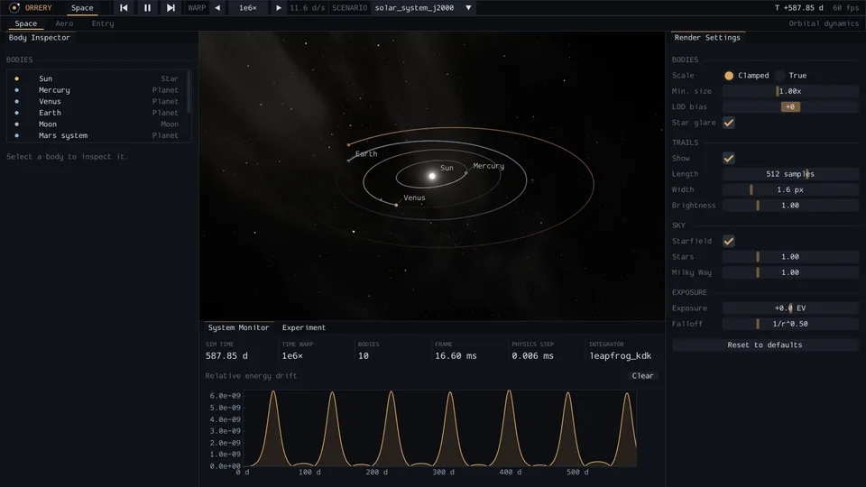
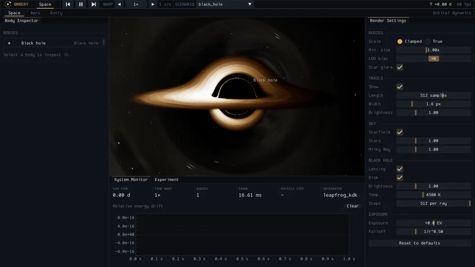
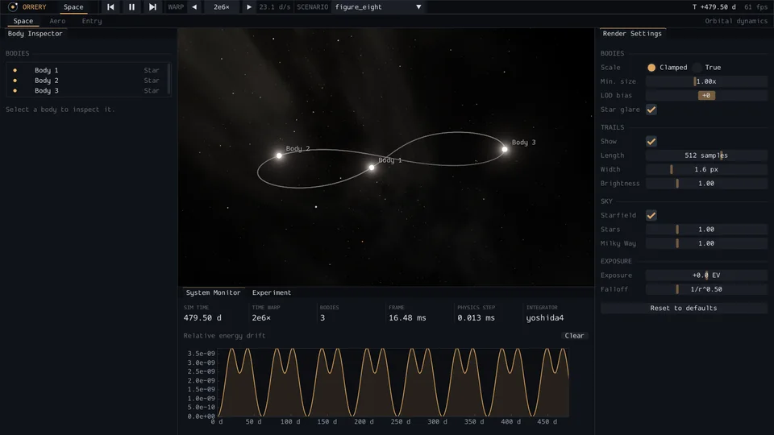

IUzay dinamiği
Space
Simplektik ve uyarlamalı integratörlerle N-cisim kütleçekimi, kara delikler, çarpışmalar ve gelgit parçalanması.
- DeneylerJ2000 Güneş sistemi, Güneş-Dünya-Ay, üç cisimli sekiz figürü, Sgr A* ve S2 yıldızı ve tek başına bir kara delik.
- İntegratörlerLeapfrog (kick-drift-kick, varsayılan), 4. mertebe Yoshida, IAS15 (uyarlamalı) ve karşılaştırma için RK4; doğrudan toplam ya da Barnes-Hut sekizli ağacı.
- Kara deliklerDinamik için Paczynski-Wiita potansiyeli; ışın yürütmeli Schwarzschild merceklenme geçişi ve Doppler parlaması ile kütleçekimsel kırmızıya kaymalı ince bir birikim diski.
- Zaman1x ile 1e7x arasında zaman hızlandırma, bir zaman hızlandırma bütçesi içinde.
- PanellerBody Inspector (oskülatör yörünge), System Monitor (enerji kayması, adım süresi, hızlandırma), Experiment, Render Settings.